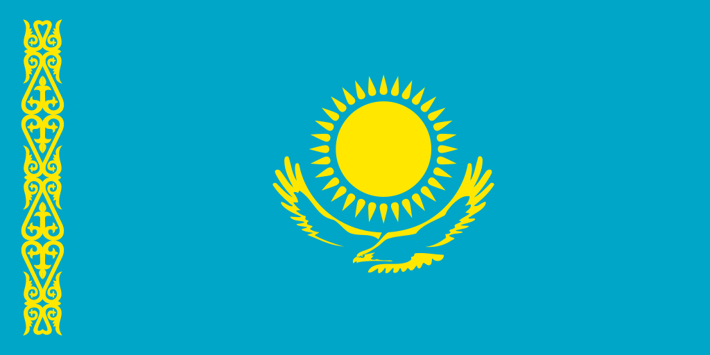

Kazakhstan-Republic of Kazakhstan
 Capital : Astana
51°10′N 71°26′E
Largest city: Almaty
43°16′39″N 76°53′45″E
.svg 1.png)
Location of the People's Republic of kazakhastan in dark green;
Capital : Astana
51°10′N 71°26′E
Largest city: Almaty
43°16′39″N 76°53′45″E
Location of the People's Republic of kazakhastan in dark green;
Kazakhstan,[b] officially the Republic of Kazakhstan,[c] is a landlocked country mostly in Central Asia, with a small part in Eastern Europe.[d] It borders Russia to the north and west, China to the east, Kyrgyzstan to the southeast, Uzbekistan to the south, and Turkmenistan to the southwest, with a coastline along the Caspian Sea. Its capital is Astana, while the largest city and leading cultural and commercial hub is Almaty. Kazakhstan is the world's ninth-largest country by land area and the largest landlocked country. It has a population of 20 million and one of the lowest population densities in the world, at fewer than 6 people per square kilometre (16 people/sq mi).[13] Ethnic Kazakhs constitute a majority, while ethnic Russians form a significant minority. Officially secular, Kazakhstan is a Muslim-majority country, although ethnic Russians in the country form a sizeable Christian community.
In 1465, the Kazakh Khanate emerged as a result of the dissolution of the Golden Horde. Established by Janibek Khan and Kerei Khan, it continued to be ruled by the Turco-Mongol clan of Tore (Jochid dynasty). Throughout this period, traditional nomadic life and a livestock-based economy continued to dominate the steppe. In the 15th century, a distinct Kazakh identity began to emerge among the Turkic tribes. This was followed by the Kazakh War of Independence, where the Khanate gained its sovereignty from the Shaybanids. The process was consolidated by the mid-16th century with the appearance of the Kazakh language, culture, and economy.
In the first half of the 18th century, the Russian Empire constructed the Irtysh line, a series of forty-six forts and ninety-six redoubts, including Omsk (1716), Semipalatinsk (1718), Pavlodar (1720), Orenburg (1743) and Petropavlovsk (1752),[38] to prevent Kazakh and Oirat raids into Russian territory.[39] In the late 18th century the Kazakhs took advantage of Pugachev's Rebellion, which was centred on the Volga area, to raid Russian and Volga German settlements.[citation needed] In the 19th century, the Russian Empire began to expand its influence into Central Asia. The "Great Game" period is generally regarded as running from approximately 1813 to the Anglo-Russian Convention of 1907. The tsars effectively ruled over most of the territory belonging to what is now the Republic of Kazakhstan.
Ural Cossacks skirmish with Kazakhs
The Russian Empire introduced a system of administration and built military garrisons and barracks in its effort to establish a presence in Central Asia in the so-called "Great Game" for dominance in the area against the British Empire, which was extending its influence from the south in India and Southeast Asia. Russia built its first outpost, Orsk, in 1735. Russia introduced the Russian language in all schools and governmental organisations.
Following the collapse of central government in Petrograd in November 1917, the Kazakhs (then in Russia officially referred to as "Kirghiz") experienced a brief period of autonomy (the Alash Autonomy) before eventually succumbing to the Bolsheviks′ rule. On 26 August 1920, the Kirghiz Autonomous Socialist Soviet Republic within the Russian Soviet Federative Socialist Republic (RSFSR) was established. The Kirghiz ASSR included the territory of present-day Kazakhstan, but its administrative centre was the mainly Russian-populated town of Orenburg. In June 1925, the Kirghiz ASSR was renamed the Kazak ASSR and its administrative centre was transferred to the town of Kyzylorda, and in April 1927 to Alma-Ata.
Stanitsa Sofiiskaya, Talgar, 1920s
Soviet repression of the traditional elite, along with forced collectivisation in the late 1920s and 1930s, brought famine and high fatalities, leading to unrest (see also: Famine in Kazakhstan of 1932–33).[42][43] During the 1930s, some members of the Kazakh intelligentsia were executed – as part of the policies of political reprisals pursued by the Soviet government in Moscow.
On 25 October 1990, Kazakhstan declared its sovereignty on its territory as a republic within the Soviet Union. Following the August 1991 aborted coup attempt in Moscow, Kazakhstan declared independence on 16 December 1991, thus becoming the last Soviet republic to declare independence. Ten days later, the Soviet Union itself ceased to exist.